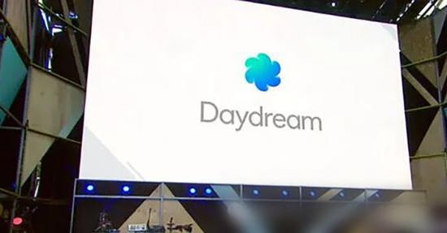
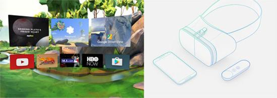
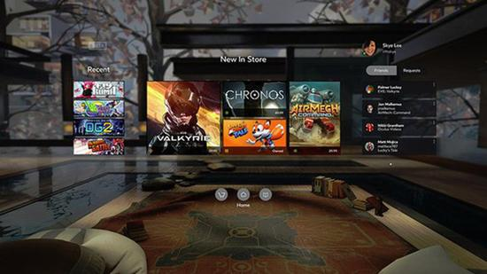

谷歌与FB生态大战正式开始 谁才是虚拟现实最后赢家？ 摘要：谷歌已经在开发者大会上推出了Daydream虚拟现实平台，这个软件平台跟Facebook的Oculus Home看上去很相似，然后在今年秋季，各大手机厂商将会发布支持Daydream平台的新一代安卓手机。 谷歌已经在开发者大会上推出了Daydream虚拟现实平台，这个软件平台跟Facebook的Oculus Home看上去很相似，然后在今年秋季，各大手机厂商将会发布支持Daydream平台的新一代安卓手机。 谷歌与FB生态大战正式开始 谁才是最后赢家

Daydream虚拟现实平台
全球著名的手机厂商，如三星、小米、华为、LG和HTC都已经决定将在今年秋季推出Daydream手机或者头显。支持Daydream平台的手机和头显可兼容大部分的设备，例如三星手机用户可以使用HTC盒子头显。谷歌也计划销售自家的Daydream头显和遥控器。 Daydream依靠Android N系统运行，并且会包括一个优化的虚拟现实模式。这意味着当智能手机连接到盒子头显中时，菜单和相关窗口都会展示在虚拟现实环境中。Android N支持Vulkan API端口，可以流畅运行高端的3D游戏，为玩家带来最佳的游戏视觉感受。这对于粗糙的Cardboard体验来说，这是个质的飞跃。但是问题是，Daydream和Android N有足够能力帮助谷歌正面对决Facebook吗？ Daydream的优势 谷歌最大的优势在于庞大的安卓用户群。现在智能手机厂商已经开始开发支持Daydream的高端设备，谷歌制定了安卓虚拟现实的标准，并且将Play Store植入到虚拟现实市场中。 谷歌与FB生态大战正式开始 谁才是最后赢家

Daydream和头显设计样式
Daydream另一个优势是价格。旗舰手机的价格远远是低于支持Oculus头显的电脑（价格高达1000美元），最高端的安卓设备售价预计为600美元左右。而Oculus Rift本身就标价600美元。如果Daydream头显的价格跟三星的Gear VR一样，那也只需要99美元甚至跟少。总的来说，谷歌的虚拟现实体验要更为廉价。另外，加入动捕技术的Daydream头显或许会比需要连接缆线的Oculus Rift和HTC Vive头显更加吸引人。 Facebook的优势 Facebook的优势在于，Oculus是虚拟现实世界的先行者，在2014年，Facebook斥资20亿美元收购了Oculus，从来没有大公司会如此重视虚拟现实。随后，Facebook不断加大对虚拟现实硬件和软件的的开发和投入，并且在2015年推出了Oculus Home，建立了首个虚拟现实生态系统。现在，大部分的开发者都已经加入到这个生态系统中，而Facebook则对每个应用销售的30%分享给开发者。 谷歌与FB生态大战正式开始 谁才是最后赢家

Oculus Home
Facebook把目标锁定在“游戏发烧友”上，因为他们都愿意花费超过1000美刀的价格购买高端的游戏配置。相信这部分人更愿意购买Oculus头显，而不是使用不尽人意的手机盒子。这也意味着Oculus并不会直接和Daydream产生太多的冲突，就像它的竞争对手索尼一样，因为索尼的PSVR是针对的旗下的PS4游戏机的。Facebook唯一需要担心的是HTC Vive的竞争，这也是为什么Oculus更新DRM防止内容被移植到Vive上的原因。 最后，Oculus的另一大优势在于有Facebook作为合作伙伴，Facebook的月度活跃用户高达16亿人。相信Oculus的优势将会逐渐凸显出来。Oculus已经在系统中添加了游戏社交元素，当Facebook的社交网络完全融入到Oculus之后，这将会成为Oculus的杀手级应用。这是谷歌所远远不能相比的。